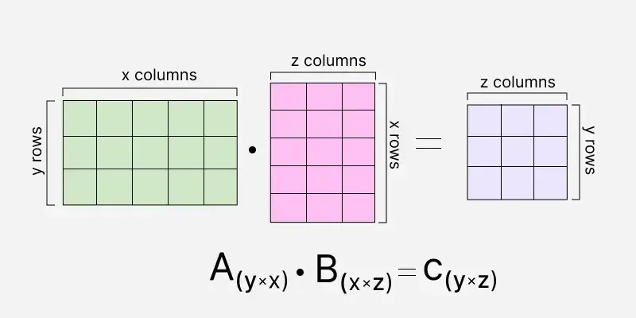
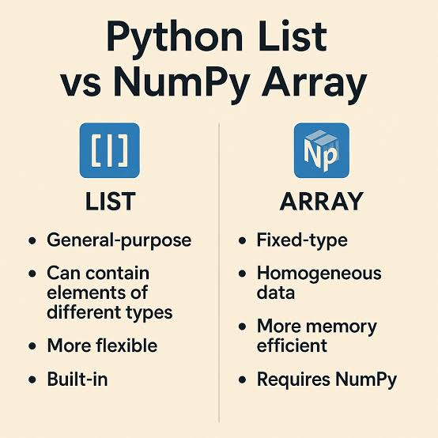

Week 2: Scientific Python Bootcamp & Tabular EDA
Applied Linear Algebra,
NumPy/PyTorch Vectorization, pandas, matplotlib &
Géron Ch. 2
Central Philippine University • College of Engineering
Department of Software Engineering • Second Semester AY 2026–2027
Week 2 Learning Outcomes & Roadmap (6 Hours)
CO1: LO 1. Translate iterative numerical
computations into vectorized array and tensor operations using NumPy and PyTorch
broadcasting rules.
Value Focus: Computational Efficiency • Precision & Attention to Detail
- Part I — Applied Linear Algebra Review: Vectors, matrices, norms, dot products, and matrix multiplication in ML notation.
- Part II —
NumPy&PyTorchTensor Architecture: Memory layout, slicing, boolean masks, reductions, and broadcasting rules. - Part III — Tabular Manipulation with
pandas:DataFrameindexing (.loc/.iloc), missing data, binning, andgroupby. - Part IV — Data Visualization with
matplotlib: Object-oriented Figure/Axes API and diagnostic statistical plots. - Part V — Géron (2025) Ch. 2 (EDA Sections): Problem framing, RMSE/MAE, stratified splitting, and California Housing EDA.
Part I: Applied Linear Algebra & Matrix Operations
Supplemental Bootcamp Notes & Géron Ch. 2 Mathematical Notation
Mathematical Objects & ML Notation (Géron Convention)
Standardizing symbols used across NumPy, PyTorch, and our
textbooks:
- Scalars (0D Tensor): Lowercase italic font, e.g., $m = 2,000$ (number of instances), $n = 8$ (features), $y^{(i)} \in \mathbb{R}$ (target label of instance $i$).
- Vectors (1D Tensor): Lowercase bold font, e.g., $\mathbf{x}^{(i)} \in \mathbb{R}^n$ represents the column feature vector of the $i$-th instance: $$\mathbf{x}^{(1)} = \begin{bmatrix} -118.29 \\ 33.91 \\ 1416 \\ 38372 \end{bmatrix}, \quad (\mathbf{x}^{(1)})^\top = \begin{bmatrix} -118.29 & 33.91 & 1416 & 38372 \end{bmatrix}$$
Mathematical Objects & ML Notation (Géron Convention)
Standardizing symbols used across NumPy, PyTorch, and our
textbooks:
- Design Matrix (2D Tensor): Uppercase bold font $\mathbf{X} \in \mathbb{R}^{m \times n}$ where each row $i$ is $(\mathbf{x}^{(i)})^\top$: $$\mathbf{X} = \begin{bmatrix} (\mathbf{x}^{(1)})^\top \\ (\mathbf{x}^{(2)})^\top \\ \vdots \\ (\mathbf{x}^{(m)})^\top \end{bmatrix} \in \mathbb{R}^{m \times n}$$
- Higher-Order Tensors (3D/4D+): Multi-dimensional arrays (e.g., RGB
image batch $\mathcal{X} \in \mathbb{R}^{B \times C \times H \times W}$ in
PyTorch).
Core Vector Operations in Machine Learning
Given two column vectors $\mathbf{u}, \mathbf{v} \in \mathbb{R}^n$ and scalar $c \in \mathbb{R}$:
- Element-Wise Addition & Scalar Multiplication: $(\mathbf{u} + \mathbf{v})_j = u_j + v_j$, $(c\mathbf{u})_j = c \cdot u_j$.
- Hadamard (Element-Wise) Product ($\mathbf{u} \odot \mathbf{v}$):
$(\mathbf{u} \odot \mathbf{v})_j = u_j v_j$ (written as
u * vinNumPy/PyTorch).
Core Vector Operations in Machine Learning
Given two column vectors $\mathbf{u}, \mathbf{v} \in \mathbb{R}^n$ and scalar $c \in \mathbb{R}$:
- Dot (Inner) Product ($\mathbf{u}^\top \mathbf{v}$): Produces a scalar
measuring alignment/similarity (written as
u @ vornp.dot(u, v)): $$\mathbf{u}^\top \mathbf{v} = \sum_{j=1}^{n} u_j v_j = \|\mathbf{u}\|_2 \|\mathbf{v}\|_2 \cos\theta$$ - Linear Model Prediction: A single instance prediction with weights $\mathbf{w} \in \mathbb{R}^n$ and bias $b \in \mathbb{R}$ is simply a dot product: $$\hat{y}^{(i)} = h_{\mathbf{w}, b}(\mathbf{x}^{(i)}) = \mathbf{w}^\top \mathbf{x}^{(i)} + b$$
Vector Norms ($\ell_p$) & Error Metrics
A norm $\|\mathbf{v}\|$ measures vector magnitude (or distance $\|\hat{\mathbf{y}} - \mathbf{y}\|$ between predictions and targets):
- General $\ell_k$ Norm: $$\|\mathbf{v}\|_k = \left( \sum_{j=1}^{n} |v_j|^k \right)^{1/k}$$
- $\ell_1$ Norm (Manhattan Norm): $\|\mathbf{v}\|_1 = \sum_{j=1}^n |v_j|$. Used in MAE: $\text{MAE} = \frac{1}{m}\|\hat{\mathbf{y}} - \mathbf{y}\|_1$.
- $\ell_2$ Norm (Euclidean Norm): $\|\mathbf{v}\|_2 = \sqrt{\sum_{j=1}^n v_j^2} = \sqrt{\mathbf{v}^\top \mathbf{v}}$. Used in RMSE: $\text{RMSE} = \frac{1}{\sqrt{m}}\|\hat{\mathbf{y}} - \mathbf{y}\|_2$.
- $\ell_0$ & $\ell_\infty$ Norms: $\|\mathbf{v}\|_0$ counts nonzero elements; $\|\mathbf{v}\|_\infty = \max_j |v_j|$ gives maximum absolute component.
- Key Insight: Higher norm indices penalize large residuals disproportionately—making RMSE far more sensitive to outliers than MAE.
Matrix Multiplication & Batch Vectorization
- Transpose ($\mathbf{A}^\top$): Flips rows and columns; if $\mathbf{A} \in \mathbb{R}^{m \times n}$, then $\mathbf{A}^\top \in \mathbb{R}^{n \times m}$ with $(\mathbf{A}^\top)_{ji} = A_{ij}$. Property: $(\mathbf{AB})^\top = \mathbf{B}^\top \mathbf{A}^\top$.
- Matrix Product ($\mathbf{C} = \mathbf{AB}$): Defined only when inner dimensions match: $(m \times \mathbf{n}) \cdot (\mathbf{n} \times p) \to (m \times p)$: $$C_{ik} = \sum_{j=1}^{n} A_{ij} B_{jk} = \mathbf{a}_{i,:}^\top \mathbf{b}_{:,k}$$
- Batch Linear Predictions: Instead of looping over $m$ instances, compute all $m$ predictions in one BLAS call: $$\hat{\mathbf{y}} = \mathbf{X}\mathbf{w} + b \quad \text{where } \mathbf{X} \in \mathbb{R}^{m \times n}, \; \mathbf{w} \in \mathbb{R}^n$$

Fig. W2.1: Matrix Multiplication $(m \times n)(n \times p) \to (m \times p)$
Essential Matrix Properties for Machine Learning
- Identity Matrix ($\mathbf{I}_n$): Square $n \times n$ matrix with $1$s on the main diagonal and $0$s elsewhere ($\mathbf{A}\mathbf{I}_n = \mathbf{I}_m\mathbf{A} = \mathbf{A}$).
- Symmetric & Positive Semi-Definite Matrices: $\mathbf{S} = \mathbf{S}^\top$. Covariance matrices $\boldsymbol{\Sigma} = \frac{1}{m}\mathbf{X}^\top\mathbf{X}$ are always symmetric and positive semi-definite ($\mathbf{v}^\top \boldsymbol{\Sigma} \mathbf{v} \ge 0$).
- Matrix Inverse ($\mathbf{A}^{-1}$) & Rank: Exists only if square
$\mathbf{A}$ has full rank (no linearly dependent columns).
ML Connection: In the Normal Equation $\hat{\boldsymbol{\theta}} = (\mathbf{X}^\top\mathbf{X})^{-1}\mathbf{X}^\top\mathbf{y}$, duplicate/collinear features make $\mathbf{X}^\top\mathbf{X}$ singular (non-invertible)! - Eigenvalues & Eigenvectors ($\mathbf{A}\mathbf{v} = \lambda\mathbf{v}$): Directions $\mathbf{v}$ scaled by $\lambda$ under transformation $\mathbf{A}$—the mathematical backbone of Principal Component Analysis (PCA).
Quick Review: Checkpoint 1 (Linear Algebra)
Verify your shape and norm intuition:
- A dataset has $m = 16,512$ districts and $n = 9$ features. What are the shapes of $\mathbf{X}$, $\mathbf{X}^\top\mathbf{X}$, and $\mathbf{X}\mathbf{X}^\top$?
- Given residual vector $\mathbf{e} = \hat{\mathbf{y}} - \mathbf{y} = [2, -2, 2, -2]^\top$, compute $\|\mathbf{e}\|_1$, $\|\mathbf{e}\|_2$, and $\|\mathbf{e}\|_\infty$.
- Why does replacing a single residual in $\mathbf{e}$ with a large outlier ($e_1 = 100$) inflate RMSE much faster than MAE?
Part II: NumPy Array Architecture, Indexing &
Broadcasting
With Direct PyTorch Tensor Parallels (CO1: LO 1)
Why Loops Are Slow: Python list vs. NumPy ndarray
- Python
listOverhead: Stores an array of pointers to scatteredPyObjectstructs on the heap. Every loop iteration incurs type checking, reference counting, and cache misses. NumPyndarrayArchitecture: Stores homogeneous, fixed-size binary elements in a contiguous C memory buffer, accessed via metadata:dtype: Fixed binary type (e.g.,float64,float32,int64).shape&ndim: Tuple of axis lengths and rank.strides: Bytes to step along each axis to reach the next element.
- Vectorization: Delegates loops to compiled C/Fortran BLAS/SIMD routines ($50\times$–$500\times$ speedup).

Fig. W2.2: Python List Heap Pointers vs. Contiguous
ndarray
Creating & Inspecting NumPy Arrays
import numpy as np
# 1. From Python sequences with explicit dtype (crucial for PyTorch float32 compatibility)
X = np.array([[1.0, 2.0, 3.0],
[4.0, 5.0, 6.0]], dtype=np.float32)
print(f"shape={X.shape}, ndim={X.ndim}, dtype={X.dtype}, strides={X.strides}")
# 2. Structural initializers
zeros = np.zeros((3, 4)) # 3x4 matrix of 0.0 (float64 default)
ones = np.ones_like(X) # Same shape & dtype as X, filled with 1.0
grid = np.linspace(0.0, 1.0, num=5) # [0.0, 0.25, 0.5, 0.75, 1.0]
ident = np.eye(3) # 3x3 identity matrix
# 3. Reproducible random generation (modern Generator API)
rng = np.random.default_rng(seed=42)
W = rng.normal(loc=0.0, scale=0.01, size=(3, 2)) # Gaussian weight initialization
idx = rng.permutation(100) # Shuffled indices [0..99]Always prefer
np.random.default_rng(seed) over legacy np.random.seed() for isolated, reproducible
streams.
Reshaping, Views vs. Copies & Axis Manipulation
a = np.arange(12) # shape: (12,)
B = a.reshape(3, 4) # View of same memory! shape: (3, 4)
C = a.reshape(3, -1) # -1 infers dimension automatically -> (3, 4)
# Views share underlying buffer (mutating B mutates a!)
print("Shares memory?", np.shares_memory(a, B)) # True
flat_view = B.ravel() # Returns contiguous view when possible
flat_copy = B.flatten() # Always allocates an independent copy
# Adding/removing singleton dimensions (essential for broadcasting)
col_vec = a[:, np.newaxis] # shape: (12, 1) (or a[:, None])
row_vec = a[None, :] # shape: (1, 12)
squeezed = col_vec.squeeze() # Removes size-1 axes -> (12,)
# Stacking & Concatenation
top = np.ones((2, 3)); bot = np.zeros((2, 3))
v_cat = np.concatenate([top, bot], axis=0) # shape: (4, 3) (same as np.vstack)
h_cat = np.concatenate([top, bot], axis=1) # shape: (2, 6) (same as np.hstack)Memory Trap: Basic
slices and .reshape() return views; use .copy() when modifying subsets
safely.
Slicing, Boolean Masking & Fancy Indexing
M = np.arange(20).reshape(4, 5)
# 1. Multi-axis slicing: M[row_slice, col_slice] -> returns a VIEW
sub = M[1:3, ::2] # Rows 1..2, every 2nd column (0, 2, 4) -> shape (2, 3)
# 2. Boolean Masking (filtering data by condition) -> returns a COPY
mask = (M[:, 0] >= 5) & (M[:, -1] < 19) # Use &, |, ~ with parentheses (NOT and/or/not!)
filtered_rows = M[mask]
# Vectorized conditional selection: np.where(condition, value_if_true, value_if_false)
capped = np.where(M > 12, 12, M)
# 3. Fancy (Integer Array) Indexing -> returns a COPY
selected_rows = M[[3, 0, 2]] # Reorders rows to index 3, then 0, then 2
diag_elements = M[[0, 1, 2, 3], [0, 1, 2, 3]] # Pairs (0,0), (1,1), (2,2), (3,3)In Python/NumPy, bitwise operators
&, |, ~ bind tighter than comparisons—always wrap conditions
in (...).
Universal Functions (ufuncs) & Axis Reductions
Understanding axis: the axis specified is the axis that gets
collapsed!
X = np.array([[10., 20., 30.],
[40., 50., 60.]]) # shape: (2 instances, 3 features)
# Element-wise ufuncs preserve shape
log_X = np.log1p(X) # log(1 + x), numerically stable for skewed counts
# Reductions along specific axes
total_sum = X.sum() # Scalar: 210.0
col_means = X.mean(axis=0) # Collapses rows (axis 0) -> shape (3,): [25., 35., 45.]
row_sums = X.sum(axis=1) # Collapses cols (axis 1) -> shape (2,): [60., 150.]
# keepdims=True preserves rank so result can broadcast back against X!
row_sums_2d = X.sum(axis=1, keepdims=True) # shape (2, 1): [[60.], [150.]]
row_probs = X / row_sums_2d # Exact row-wise normalization!Passing keepdims=True
prevents rank-collapse bugs when dividing a 2D matrix by row statistics.
Broadcasting Rules in NumPy & PyTorch
When operating on two arrays/tensors of different shapes, NumPy and PyTorch
apply the exact same 3 rules:
- Rule 1 (Rank Alignment): If arrays differ in
ndim, prepend1s to the left of the smaller shape until ranks match. - Rule 2 (Dimension Compatibility): Compare dimensions from right to left. Each pair $(d_1, d_2)$ is compatible iff $d_1 = d_2$, OR $d_1 = 1$, OR $d_2 = 1$.
- Rule 3 (Virtual Stretching): Output shape takes $\max(d_1, d_2)$
along each axis; size-
1dimensions repeat virtually with zero extra memory. Otherwise, raisesValueError/RuntimeError.
Fig. W2.3: Left-Padding & Stretching Along Size-1 Axes
Broadcasting in Action & The Silent Outer-Sum Bug
# Example 1: Feature-wise Z-score standardization
X = rng.normal(size=(1000, 8)) # shape: (1000, 8)
mu = X.mean(axis=0) # shape: (8,) -> padded to (1, 8) -> stretched to (1000, 8)
sigma = X.std(axis=0) # shape: (8,) -> padded to (1, 8) -> stretched to (1000, 8)
X_scaled = (X - mu) / sigma # shape: (1000, 8)
# Example 2: Pairwise Euclidean distance matrix via broadcasting
A = rng.normal(size=(50, 3)) # 50 points in 3D -> A[:, None, :] has shape (50, 1, 3)
B = rng.normal(size=(20, 3)) # 20 points in 3D -> B[None, :, :] has shape (1, 20, 3)
diff = A[:, None, :] - B[None, :, :] # Broadcasts to (50, 20, 3)!
dist_matrix = np.sqrt((diff ** 2).sum(axis=-1)) # shape: (50, 20)
# WARNING: The Silent Shape Bug!
y_true = np.array([1.0, 2.0, 3.0]) # shape: (3,)
y_pred = np.array([[1.1], [1.9], [3.2]])# shape: (3, 1)
err = y_pred - y_true # (3, 1) - (1, 3) -> broadcasts to (3, 3) matrix instead of (3,)!Always assert
y_pred.shape == y_true.shape before computing residuals!
Side-by-Side: NumPy vs. PyTorch Tensors
Near-identical APIs make transitioning from tabular ML to deep learning seamless:
import numpy as np
import torch
# --- NumPy Implementation ---
X_np = np.random.default_rng(0).normal(size=(1000, 10)).astype(np.float32)
W_np = np.ones((10, 1), dtype=np.float32)
b_np = np.array([0.5], dtype=np.float32)
y_np = X_np @ W_np + b_np # Matrix multiply + (1,) broadcast -> (1000, 1)
# --- PyTorch Equivalent ---
X_pt = torch.from_numpy(X_np) # Zero-copy bridge sharing CPU memory!
W_pt = torch.ones((10, 1), dtype=torch.float32)
b_pt = torch.tensor([0.5], dtype=torch.float32)
y_pt = X_pt @ W_pt + b_pt # Exact same @ operator & broadcasting rules!
assert np.allclose(y_np, y_pt.numpy())Key naming differences:
axis (NumPy) ↔ dim (PyTorch); .reshape() / .view();
default float is float64 (NumPy) vs float32 (PyTorch).
Quick Review: Checkpoint 2 (Broadcasting & Vectorization)
Determine whether each pair of shapes is broadcast-compatible and give the output shape:
A.shape = (64, 3, 28, 28)andB.shape = (3, 1, 1)(e.g., per-channel RGB image normalization).A.shape = (100, 5)andB.shape = (100,). How do you fix this if you want to subtractBfrom each column ofA?- Why does
arr[1:4]share memory witharr, whereasarr[[1, 2, 3]]allocates a new array?
Part III: Tabular Data Manipulation with pandas
Supplemental Bootcamp Notes for Structured Datasets
Series and DataFrame Architecture
pd.Series: A 1D labeled array holding a singledtype, backed by aNumPy/Arrow array plus an explicitIndex.pd.DataFrame: A 2D heterogeneous table mapping column names toSeriesobjects sharing a rowIndex.- Essential Inspection Methods:
df.shape,df.columns,df.dtypesdf.head(n)/df.tail(n)/df.sample(n, random_state=42)df.info()(non-null counts, dtypes, memory footprint) &df.describe()(quartiles, mean, std)df["col"].value_counts(dropna=False, normalize=True)
- Bridging to ML Libraries: Extract raw feature matrices via
X = df[feature_cols].to_numpy().
Precision Indexing: .loc[] vs. .iloc[]
import pandas as pd
# 1. Column selection
col_series = df["median_income"] # Single column -> Series
sub_df = df[["median_income", "population"]] # List of cols -> DataFrame
# 2. .loc[row_labels, col_labels] -> LABEL-based (end label IS inclusive!)
df.loc[0:4, ["longitude", "latitude"]]
# 3. .iloc[row_pos, col_pos] -> INTEGER POSITION-based (end index is EXCLUSIVE!)
df.iloc[0:5, 0:2]
# 4. Conditional Filtering + Safe Assignment (Avoid chained indexing df[mask]["col"] = val!)
high_income = df.loc[df["median_income"] > 6.0, ["median_income", "median_house_value"]]
df.loc[df["total_bedrooms"].isna(), "bedrooms_missing"] = 1Always use single-step
df.loc[row_mask, col_name] = value to prevent SettingWithCopyWarning.
Data Cleaning, Missing Values & Discretization
# 1. Auditing missing values
missing_counts = df.isna().sum()
missing_pct = (df.isna().mean() * 100).round(2)
# 2. Handling missing values (note: fit medians ONLY on training data!)
df_clean = df.dropna(subset=["median_house_value"]).copy()
median_bed = df_clean["total_bedrooms"].median()
df_clean["total_bedrooms"] = df_clean["total_bedrooms"].fillna(median_bed)
# 3. Type conversion & categorical memory optimization
df_clean["ocean_proximity"] = df_clean["ocean_proximity"].astype("category")
numeric_col = pd.to_numeric(raw_series, errors="coerce") # Invalid strings -> NaN
# 4. Discretizing continuous variables into strata (used in Géron Ch. 2!)
df_clean["income_cat"] = pd.cut(
df_clean["median_income"],
bins=[0.0, 1.5, 3.0, 4.5, 6.0, np.inf],
labels=[1, 2, 3, 4, 5]
)Split–Apply–Combine (groupby), Joins & Vectorized Columns
# 1. Named aggregations with groupby()
summary = (
df.groupby("ocean_proximity", observed=True)
.agg(
district_count=("median_house_value", "count"),
median_price=("median_house_value", "median"),
mean_income=("median_income", "mean")
)
.sort_values("median_price", ascending=False)
)
# 2. Relational Joins (merging lookup tables)
enriched = pd.merge(df, region_metadata, on="region_id", how="left")
# 3. Vectorized Feature Creation (Prefer vectorized arithmetic over slow .apply(lambda ...))
df = df.assign(
rooms_per_house=df["total_rooms"] / df["households"],
bedrooms_ratio=df["total_bedrooms"] / df["total_rooms"],
people_per_house=df["population"] / df["households"]
)Vectorized column arithmetic runs in
C/NumPy speed—avoid row-wise df.apply(..., axis=1) on large tables.
Part IV: Data Visualization with matplotlib
Object-Oriented Plotting & Diagnostic Visuals
Anatomy of a matplotlib Figure (OO Interface)
Figure: The top-level canvas container holding one or more subplots, titles, and colorbars.Axes: An individual plot region with its own coordinate system, x/yAxisobjects, ticks, labels, and legend.- Why Use the OO API (
fig, ax = plt.subplots())?- Explicitly targets specific panels in multi-plot figures.
- Avoids hidden global state bugs from legacy MATLAB-style
plt.plot()calls.
Fig. W2.4: Hierarchy of Figure,
Axes, Axis, and Artist
Building Diagnostic Subplots in matplotlib
import matplotlib.pyplot as plt
fig, axes = plt.subplots(nrows=1, ncols=3, figsize=(14, 4), dpi=120)
# Panel 1: Histogram (distribution shape, skewness, capping artifacts)
axes[0].hist(housing["median_income"], bins=50, color="#4c72b0", edgecolor="white")
axes[0].set(title="Median Income Distribution", xlabel="Median Income ($10k)", ylabel="Districts")
# Panel 2: Scatter with alpha transparency (revealing density & horizontal price caps)
axes[1].scatter(housing["median_income"], housing["median_house_value"], alpha=0.1, s=10)
axes[1].set(title="Income vs. House Value", xlabel="Median Income ($10k)", ylabel="House Value ($)")
# Panel 3: Correlation Matrix Heatmap
corr = housing[["median_house_value", "median_income", "rooms_per_house", "bedrooms_ratio"]].corr()
im = axes[2].imshow(corr, cmap="coolwarm", vmin=-1, vmax=1)
axes[2].set_xticks(range(len(corr)), corr.columns, rotation=30, ha="right")
axes[2].set_yticks(range(len(corr)), corr.columns)
fig.colorbar(im, ax=axes[2], fraction=0.046)
fig.tight_layout()
plt.show()Part V: End-to-End ML Project & Tabular EDA
Géron (2025), Chapter 2 — California Housing Case Study
The 8 Steps of an End-to-End ML Project
Géron's structured checklist (Steps 1–3 covered this week; Steps 4–8 in Weeks 3–4):
Week 2 Focus (Steps 1–3)
- Look at the big picture (frame problem, select metric, verify assumptions).
- Get the data (automate ingestion, inspect schema, create test set first).
- Explore and visualize the data (gain domain insights, check correlations, test attribute combinations).
Weeks 3–4 Preview (Steps 4–8)
- Prepare the data for ML algorithms (clean, encode, scale via
Pipeline). - Select a model and train it.
- Fine-tune your model (cross-validation & grid/random search).
- Present your solution.
- Launch, monitor, and maintain your system.
Step 1: Look at the Big Picture & Frame the Problem
- Business Objective: Predict a California census block group's (district's) median housing price to feed into a downstream investment analysis pipeline.
- Current Baseline: Manual expert estimates using complex rules—slow, expensive, and often off by >30%.
- Problem Framing Decisions:
- Supervision: Supervised learning (labeled historical census prices).
- Task Type: Multiple univariate regression (multiple input features, single continuous target per district).
- Learning Mode: Batch learning (data fits in memory; no rapid streaming updates needed).
- Check Assumptions: Confirm downstream team needs exact dollar prices, not coarse categories ("cheap"/"expensive").
Géron Fig. 2-2: Upstream/Downstream ML Pipeline
Step 1 (Cont.): Selecting a Performance Measure
Comparing the two standard regression loss/evaluation functions:
- Root Mean Square Error (RMSE — Equation 2-1): Corresponds to the Euclidean ($\ell_2$) norm; penalizes large errors heavily: $$\text{RMSE}(\mathbf{X}, h) = \sqrt{\frac{1}{m} \sum_{i=1}^{m} \left( h(\mathbf{x}^{(i)}) - y^{(i)} \right)^2}$$
- Mean Absolute Error (MAE — Equation 2-2): Corresponds to the Manhattan ($\ell_1$) norm; more robust when there are many outlier districts: $$\text{MAE}(\mathbf{X}, h) = \frac{1}{m} \sum_{i=1}^{m} \left| h(\mathbf{x}^{(i)}) - y^{(i)} \right|$$
- Rule of Thumb: When outliers are exponentially rare (bell-shaped error distribution), RMSE is generally preferred.
Step 2: Automated Data Ingestion & Structure Check
- Automate Fetching: Write a Python function
(
load_housing_data()) usingpathlib,urllib, andtarfileso dataset retrieval is reproducible across environments. - Initial Audit (20,640 districts, 10 attributes):
housing.info()revealstotal_bedroomshas only 20,433 non-null values (207 missing values).- All attributes are
float64exceptocean_proximity(objecttext categorical). housing["ocean_proximity"].value_counts()reveals 5 categories (<1H OCEAN: 9,136;INLAND: 6,551;NEAR OCEAN: 2,658;NEAR BAY: 2,290;ISLAND: 5).
Géron Figs. 2-6 & 2-7: head()
& describe() Summary
Diagnostic Histograms: 4 Critical Data Discoveries
Calling housing.hist(bins=50, figsize=(12, 8)) exposes hidden quirks immediately:
- Pre-Scaled & Capped Income:
median_incomeis expressed in tens of thousands of USD and capped at0.5and15.0. - Target & Age Capping:
housing_median_ageis capped at 52, and targetmedian_house_valueis capped at $500,000—risking models that never predict above $500k! - Varying Scales: Attributes span vastly different ranges (necessitating feature scaling later).
- Heavy Right-Skewness:
total_rooms,total_bedrooms,population, andhouseholdshave long right tails (candidates for log/sqrt transforms).
Géron Fig. 2-8: Histograms of All Numerical Attributes
STOP! Create a Test Set Before Exploring Further
Data Snooping Bias: Looking at the test set leads your brain to overfit model choices to test quirks.
- Naive Random Split Pitfall: Re-running unseeded random splits eventually leaks the entire dataset across runs; even seeded splits break if new rows are inserted into an updated dataset.
- Deterministic ID Hashing (
zlib.crc32): Hash each instance's immutable unique identifier (e.g.,longitude * 1000 + latitude) and assign to test if $\text{hash}(\text{id}) < 0.2 \times 2^{32}$. scikit-learnStandard Splitting:from sklearn.model_selection import train_test_split train_set, test_set = train_test_split(housing, test_size=0.2, random_state=42)
Stratified Sampling: Eliminating Sampling Bias
Because domain experts identify median_income as the strongest predictor, we divide the
population into homogeneous strata (income_cat 1–5 via
pd.cut) so the test set mirrors the full dataset's distribution:
housing["income_cat"] = pd.cut(
housing["median_income"],
bins=[0., 1.5, 3.0, 4.5, 6., np.inf],
labels=[1, 2, 3, 4, 5]
)
strat_train_set, strat_test_set = train_test_split(
housing, test_size=0.2, stratify=housing["income_cat"], random_state=42
)
for set_ in (strat_train_set, strat_test_set):
set_.drop("income_cat", axis=1, inplace=True)Stratified sampling cuts category proportion error to <0.4% vs. up to 6.45% in purely random sampling!
Géron Figs. 2-9 & 2-10: Income Strata & Sampling Bias Comparison
Step 3: Visualizing Geographical & Multi-Variable Patterns
Working strictly on housing = strat_train_set.copy():
- Fixing Overplotting: Plain scatter plots hide point density; setting
alpha=0.2reveals dense urban clusters (Bay Area, LA, San Diego, Central Valley). - 4-Dimensional Bubble Scatter: Encode
longitude($x$),latitude($y$),population/100(circle radiuss), andmedian_house_value(colorcwithcmap="jet"). - Actionable Modeling Insight: Housing prices correlate strongly with coastal proximity and population clusters—motivating radial basis / clustering similarity features later!
Géron Figs. 2-12 & 2-13: Density Scatter & Price/Population Map
Looking for Correlations: Pearson's $r$ & scatter_matrix
- Correlation Matrix (
housing.corr(numeric_only=True)):median_income: +0.688 (strongest positive predictor)total_rooms: +0.137 |housing_median_age: +0.102latitude: −0.140 (slight southward price increase)
scatter_matrix& Zoomed Income Scatter: Plottingmedian_incomevs.median_house_value(alpha=0.1) exposes sharp horizontal cap lines at $500k, $450k, $350k, and $280k that we may want to clean so models don't learn data quirks.
Géron Figs. 2-14 & 2-15: Scatter Matrix & Income-Price Cap Lines
Warning: What Pearson's Correlation $r$ Misses
- Measures Linear Trend Only: $r \in [-1, 1]$ captures monotonic linear association ("as $x$ rises, $y$ rises/falls linearly").
- Independent of Slope: A steep line and a nearly flat line both have $r = 1.0$ (height in inches vs. height in nanometers has $r = 1.0$).
- Blind to Nonlinear Dependencies: Quadratic curves, circles, sinusoids, and symmetric clusters (bottom row) all yield $r = 0$ despite deterministic functional relationships!
- Takeaway: Always visualize scatter plots alongside summary correlation tables.
Géron Fig. 2-16: Correlation $r$ vs. Slope & Nonlinear Shapes
Experimenting with Attribute Combinations
Raw totals per district are noisy unless normalized into meaningful domain ratios:
housing["rooms_per_house"] = housing["total_rooms"] / housing["households"]
housing["bedrooms_ratio"] = housing["total_bedrooms"] / housing["total_rooms"]
housing["people_per_house"] = housing["population"] / housing["households"]
corr_matrix = housing.corr(numeric_only=True)
print(corr_matrix["median_house_value"].sort_values(ascending=False))bedrooms_ratio($r = -0.256$): Much stronger correlation with house value than rawtotal_bedrooms($+0.055$) ortotal_rooms($+0.137$)—houses with a lower bedroom-to-room ratio tend to be more expensive!rooms_per_house($r = +0.144$): More informative measure of house size than raw district room count.- EDA is iterative: build a fast prototype, analyze model errors, and return to engineer better features.
Quick Review: Checkpoint 3 (Géron Ch. 2 EDA)
Test your data science discipline:
- Why must
train_test_split()happen before plotting correlation matrices, histograms, or computing imputation medians? - Why did we discretize
median_incomeintoincome_catbefore splitting, and why did we dropincome_catimmediately after? - Two attributes have a Pearson correlation of $r = 0.0$. Can we safely conclude they are statistically independent and drop the feature? Why or why not?
Laboratory Activity 1: Vectorization & Tabular EDA
Formative Assessment (100 Points — Evaluated via Analytical Lab Rubric):
- Part A — Loop-to-Vectorization Refactoring (
NumPy&PyTorch):- Refactor iterative Python implementations of batch linear inference, Z-score standardization, and pairwise Euclidean distance matrices into vectorized operations using broadcasting.
- Verify numerical equivalence with
np.allclose()/torch.allclose()and benchmark runtime speedups usingtimeit.
- Part B — Leak-Free Stratified Split & Tabular EDA (
pandas&matplotlib):- Perform stratified train/test splitting on a real-world tabular dataset before exploring.
- Produce diagnostic histograms, missing-value audits, multi-variable scatter plots, correlation heatmaps, and engineered ratio features with documented findings.
- Rubric Focus: Algorithmic/Math Correctness (25%), Modularity & Tool Usage (25%), Experimental Rigor & No Leakage (20%), Diagnostic Analysis (20%), Reporting & Plots (10%).
Summary of Week 2
- Linear Algebra as Code: Design matrices $\mathbf{X} \in \mathbb{R}^{m \times n}$, batch predictions $\mathbf{X}\mathbf{w} + b$, and $\ell_1$/$\ell_2$ norms map directly to matrix multiplication and regression metrics (MAE/RMSE).
- Vectorization & Broadcasting: Eliminating Python loops via
contiguous arrays and right-aligned size-1 broadcasting delivers orders-of-magnitude speedups across both
NumPyandPyTorch. - Disciplined EDA Workflow: Isolate a stratified test set first, diagnose capping/skewness/missing data visually, remember Pearson's $r$ only captures linear trends, and test domain ratio features.
- Next Week (Weeks 3–4): Data Preparation, Custom
scikit-learnEstimators, Leak-FreePipelines, and Cross-Validation (Géron Ch. 2, Part 2).